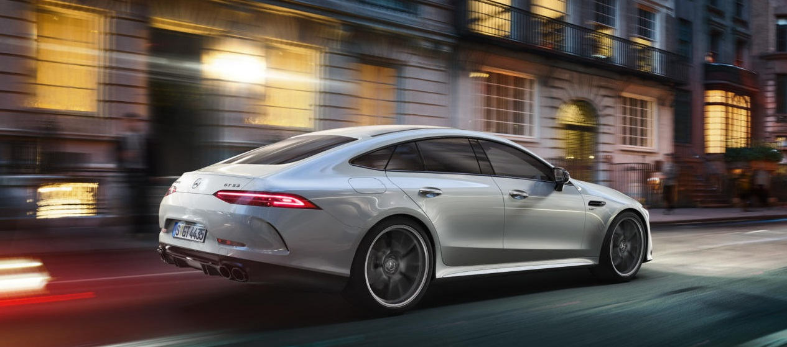

Mercedes AMG GT 4-Door Coupe
Automobilul este dotat cu directie integrala, un diferential pe puntea din spate care este controlat electronic, doua display-uri pentru ceasurile de bord, multe elemente aerodinamice, scaune sport imbracate in piele Nappa, dar si lumina ambientala.
Prețul de pornire fiind 150.119 de euro.
De la aspectul sau absolut extravagant, pana la ceea ce se afla sub capota, Mercedes-AMG GT 4-Door Coupe este o opera de arta desavarsita.
Doar ca surpriza nemtilor vine in trei modele destul de interesante: Mercedes-AMG GT 63 S, Mercedes-AMG GT 63 si Mercedes-AMG GT 53.
Cea mai interesanta parte care o sa ne placa cu siguranta este faptul ca toate versiunile cu motoare V8 au o functie denumita Mod de Condus Drift care in loc sa utilizeze sistemul AWD, trimite puterea catre rotile care participa la distractia sufletului nostru.